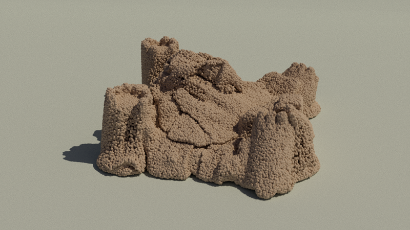
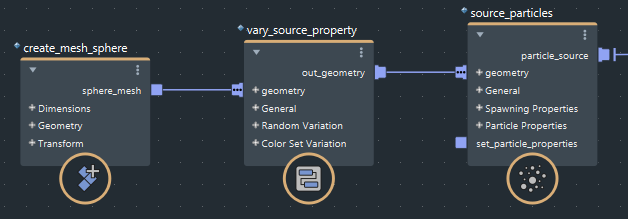

从源发射时，可以改变特性以获得更自然的外观。例如，可以改变基本粒子的大小、烟的密度、沙子的粘度等。

提供了两种方法：
auto 端口。vary_source_property 节点。此方法易于设置。但是，它不适用于布料或壳模拟。
将以下类型之一连接到 source_particles、source_air、source_mpm_sand、source_mpm_snow 或 source_mpm_fluid 节点的兼容 float 或 float3 端口，例如，fog_density 用于空气，viscosity 用于沙子。兼容特性由其端口上的光晕标识，表示它们接受不同的输入类型。
vary_source_property 改变发射特性此方法更复杂，但更灵活。它还适用于所有类型的模拟。

将发射器几何体连接到 vary_source_property 节点的 geometry 输入。
将 vary_source_property 节点的 out_geometry 输出连接到源节点的 geometry 输入。
指定要改变的 property。可用特性名称取决于模拟的类型 - 可在“信息”(Info)选项卡中查看对应的列表。如果要使用相同设置改变多个特性，可以输入以空格分隔的特性列表。
选择如何改变这些值：
randomize_values，并根据需要设置 min、max、bias 和 animated。为了在几何体中均匀改变值，应使用密集网格。要改变向量值（例如 direction），请将 float3 value 节点连接到 min 或 max 端口。使用 layer_mode 指定是否要将在源节点上设置的值替换为随机值、与随机值相加或相乘。use_color_set，并指定 color_set_name，就像在主场景中对几何体调用它一样。使用单通道颜色集改变 float 值，使用 RGB 颜色集改变 float3 值。randomize_values 和 use_color_set 都已启用，则颜色集将用作随机值的倍增。multiplier 扩大或缩小值。要使用不同设置改变其他特性，请在发射器几何体与源节点之间将其他 vary_source_property 节点呈菊花链状连接到一起。
如果使用多个 vary_source_property 节点多次改变相同的特性，则它们的应用顺序与它们在链中的显示顺序不同。